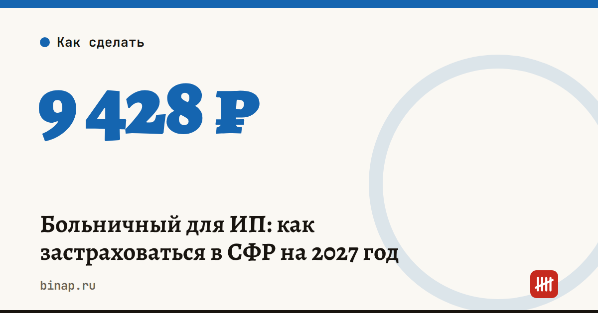

Больничный для ИП: как застраховаться в СФР на 2027 год

ИП, который платит взносы только «за себя», больничных и декретных от государства не получает: обязательные взносы ИП идут на пенсию и медицину. Чтобы получать пособия в 2027 году, нужно встать на учёт в СФР как доброволец и до 31 декабря 2026 года заплатить 9 428,36 ₽.
Коротко
- Взнос считается от МРОТ: 27 093 ₽ × 12 × 2,9% = 9 428,36 ₽. В регионах с районным коэффициентом сумма больше.
- Заплатить нужно весь взнос до 31 декабря 2026 года — тогда право на пособия будет весь 2027 год.
- Заявление подают через Госуслуги, МФЦ или в отделении СФР.
- Пособие считается от МРОТ, а не от вашего дохода.
- Самозанятые подключаются к больничным по отдельному эксперименту — через приложение «Мой налог».
Что даёт добровольное страхование
Если взнос за 2026 год уплачен вовремя, в 2027 году ИП может получить:
- Пособие по временной нетрудоспособности — больничный, в том числе по уходу за ребёнком.
- Пособие по беременности и родам.
Размер пособий считают от МРОТ, а не от фактического дохода ИП, поэтому даже при большом обороте выплата будет скромной. Это страховка на случай, когда доход останавливается, а не замена дохода.
Сколько стоит
| За какой год платите | Когда действуют пособия | Расчёт | Сумма |
|---|---|---|---|
| 2026 | 2027 | 27 093 × 12 × 2,9% | 9 428,36 ₽ |
Если в регионе действует районный коэффициент, МРОТ умножают на него. Например, при коэффициенте 1,3 взнос составит 9 428,36 × 1,3 = 12 256,87 ₽ (расчёт редакции).
Добровольный взнос не путайте с фиксированными взносами ИП за себя: это отдельный платёж в СФР по реквизитам, которые даст фонд. Сколько ИП платит обязательных взносов — в разборе налоги и взносы ИП на УСН 6%.
Как застраховаться: пошагово
- Подайте заявление о добровольном вступлении в отношения по обязательному социальному страхованию: через Госуслуги, в МФЦ или лично в отделении СФР. Нужен паспорт.
- Дождитесь регистрации и получите реквизиты для оплаты — их сообщит СФР.
- Заплатите всю сумму до 31 декабря 2026 года. Источники сходятся, что взнос платят полностью за год, даже если вы зарегистрировались в конце года. Если хотите платить частями — уточните это в своём отделении СФР заранее.
- Сохраните платёжку — она понадобится, если возникнет спор о праве на пособие.
Не успели до 31 декабря — права на пособия в 2027 году не будет.
Кому это выгодно
| Ситуация | Стоит ли |
|---|---|
| Планируете беременность и роды в 2027 году | да, это главный повод |
| Работаете в одиночку, нет подушки безопасности | имеет смысл как минимальная страховка |
| Работаете по трудовому договору параллельно с ИП | обычно нет: больничные вы получаете как сотрудник |
| Высокий доход и запас денег | пособие от МРОТ мало что изменит |
Добровольное страхование — не единственный способ защитить бизнес. Какие ещё риски можно застраховать и нужен ли бухгалтер, чтобы вести взносы, — в статье нужен ли бухгалтер ИП на УСН.
Частые вопросы
Можно ли получить больничный ИП без добровольных взносов? Нет. Обязательные взносы ИП за себя не дают права на больничные и декретные.
Пособие при рождении ребёнка тоже требует взносов? Нет. Единовременное пособие при рождении ребёнка положено без добровольного страхования, по данным Контура — 28 450,45 ₽ с 1 февраля 2026 года.
Что делать самозанятому? Для самозанятых с 2026 по 2028 год идёт отдельный эксперимент (закон № 456-ФЗ): подключиться к больничным можно через приложение «Мой налог», страховую сумму выбирают сами.